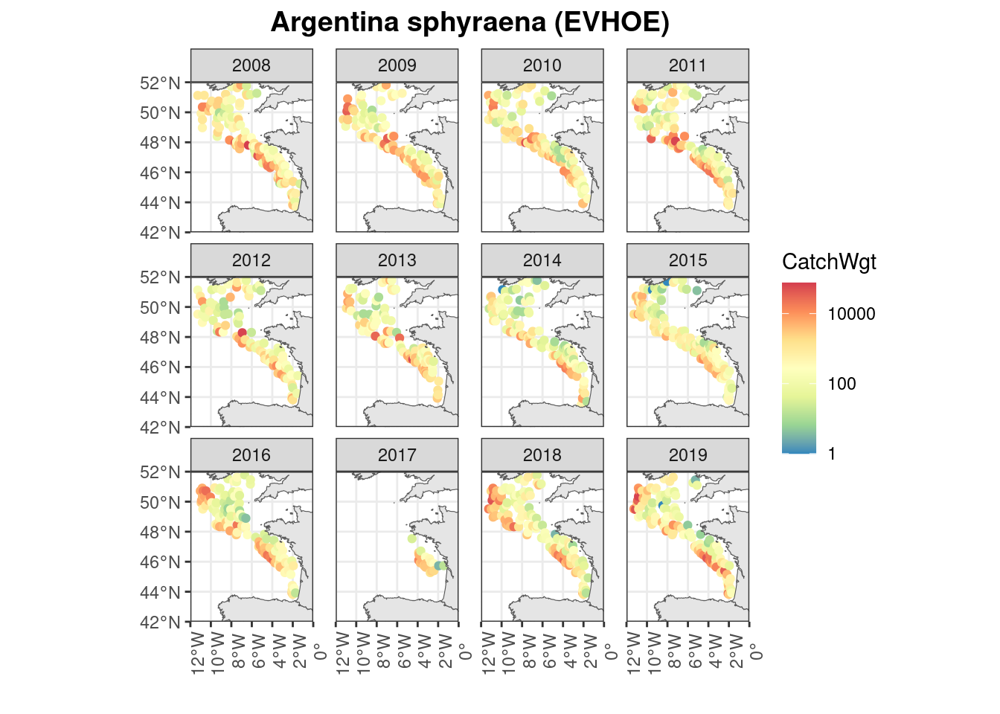
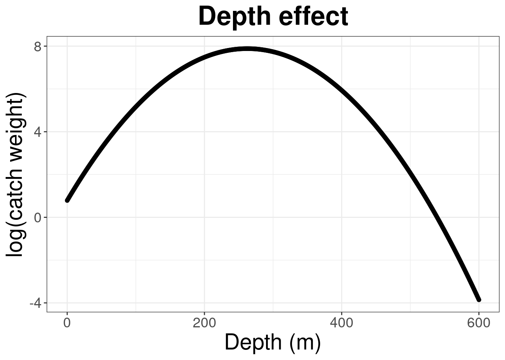
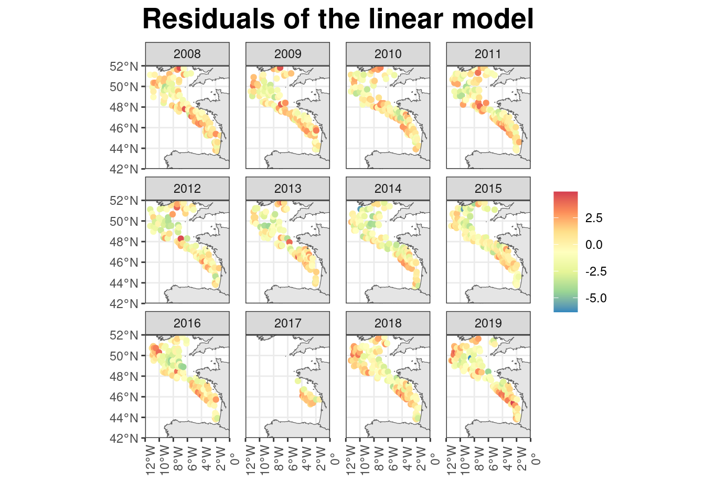
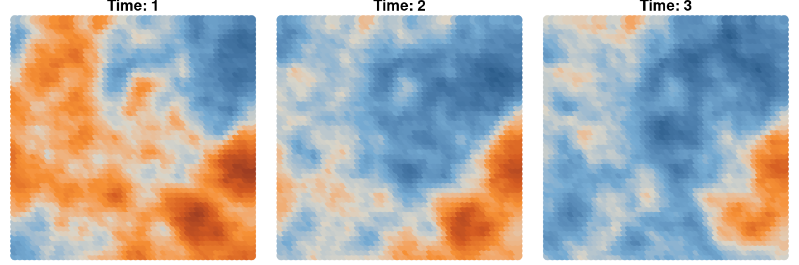
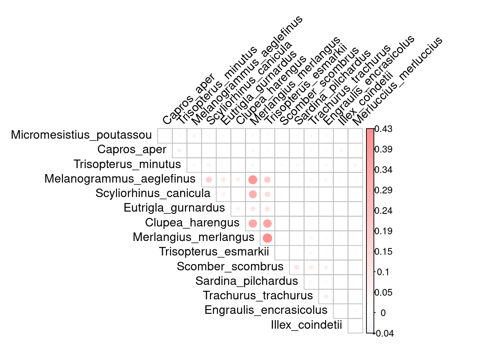
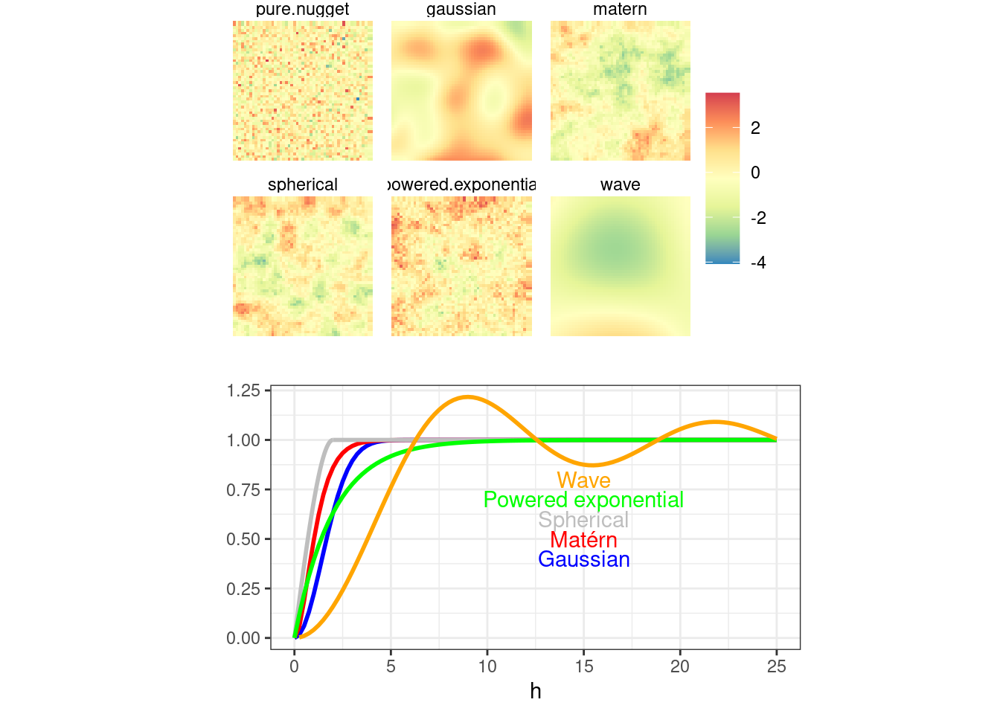
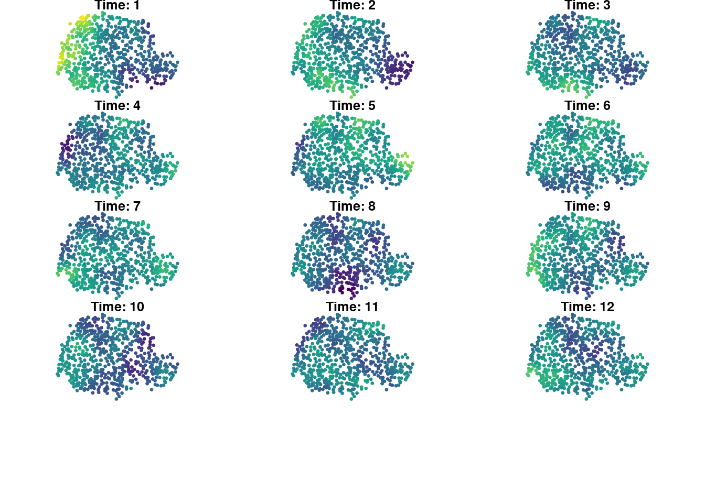
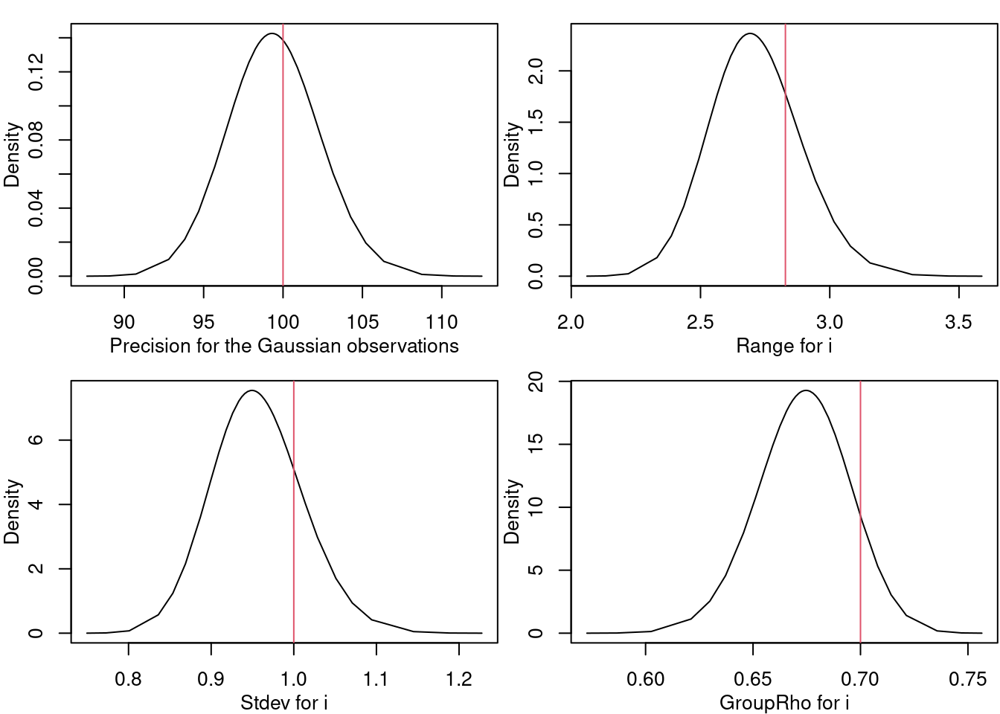
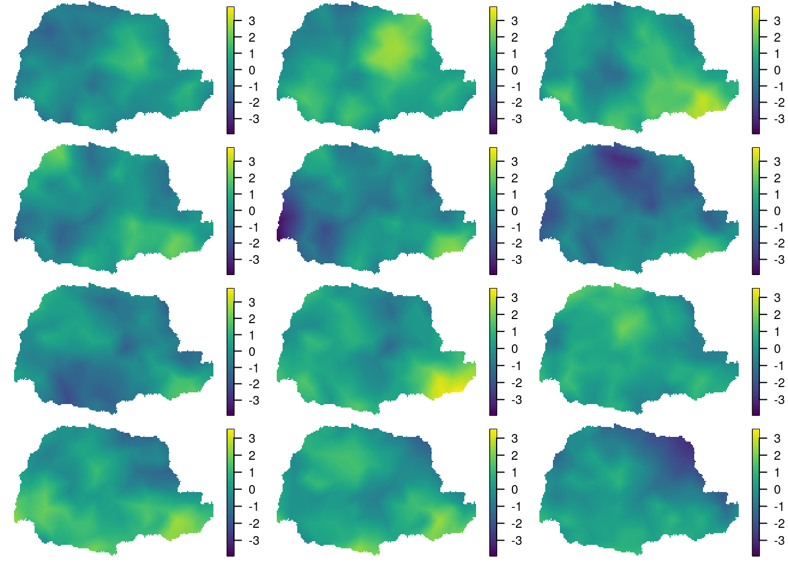

Stats
Introduction
All ecological processes have a spatial and a spatio-temporal dimension:
Data and ecological processes
What are the characteristics of these data?
What are the characteristics of the ecological process we want to infer?
How to relate the data to the ecological process?
Hierarchical models
\[\mathbf{Y} | \mathbf{S},\boldsymbol{\theta}_{obs} \sim \mathcal{L}(\mathbf{S},\boldsymbol{\theta}_{obs})\]
\(\mathbf{Y}\): observations
\(\mathbf{S}\): latent field
\(\mathcal{L}\): probability distribution of \(\mathbf{Y}\)
\(\boldsymbol{\theta}_{obs}\): observation parameters
\[\mathbf{S} | \boldsymbol{\theta}_{process} \sim \mathcal{F}(\boldsymbol{\theta}_{process})\]
\(\mathcal{F}\): probability distribution of \(\mathbf{S}\)
\(\boldsymbol{\theta}_{process}\): process parameters
Basis of spatio-temporal statistical modeling
Linear models are basis of statistical models.
For instance, in the case of EVHOE data for Argentina sphyraena, let’s assume that species spatio-temporal distribution \(\mathbf{S}\) vary in space (\(x\)), time (\(t\)) and depends on a quadratic effect of depth.
\[\log(Y_i) \overset{i.i.d}{\sim} \mathcal{N}(S(x_i,t_i),\sigma^2)\]
\[S(x,t)=\mu + \beta_1 \cdot \text{Depth}(x) + \beta_2 \cdot (\text{Depth}(x)) ^ 2\]
\[\log(Y_i) = \mu + \beta_1 \cdot \text{Depth}(x_i) + \beta_2 \cdot (\text{Depth}(x_i)) + \epsilon_i\]
\[\epsilon_i \overset{i.i.d}{\sim} \mathcal{N}(0,\sigma^2)\]

However, the i.i.d hypothesis is rarely satisfied in a spatio-temporal context as there can be spatio-temporal correlation structures in the residuals.

Accounting for spatial and spatio-temporal dependencies
Introduce a Gaussian field (\(\mathcal{GF}\)) \(\boldsymbol{\delta}\) in the hierarchical framework that captures spatial / spatio-temporal correlation
\[\log(Y_i) \overset{i.i.d}{\sim} \mathcal{N}(S(x_i,t_i),\sigma^2)\]
\[S(x,t)=\mu + \beta_1 \cdot \text{Depth}(x) + \beta_2 \cdot \text{Depth}(x) ^ 2 + \delta(x,t)\]
\[\boldsymbol{\delta} \sim \mathcal{GF}(0, \mathcal{C}(x, y ; t, r))\]
with \(\mathcal{C}(x, y ; t, r)\) the spatio-temporal covariance function that controls the structure of \(\boldsymbol{\delta}\)
Defining a Gaussian Field
Simulation of a spatio-temporal Gaussian random field

Probability density function of a multivariate Normal distribution:
\[ f_{MN}(\delta_1,...,\delta_n)=(2 \pi)^{-n / 2}|\boldsymbol{\Sigma}|^{-1 / 2} \exp \left(-\frac{1}{2}\boldsymbol{\delta}^T \boldsymbol{\Sigma}^{-1}\boldsymbol{\delta}\right) \]
For a vector of \(p\) random variables \(\mathbf{X}=(X_1,...,X_p)\):
\[ \operatorname{Var}(\mathbf{X})=\left(\begin{array}{cccc} \operatorname{Var}\left(X_1\right) & \operatorname{Cov}\left(X_1, X_2\right) & \cdots & \operatorname{Cov}\left(X_1, X_p\right) \\ \operatorname{Cov}\left(X_2, X_1\right) & \ddots & \cdots & \vdots \\ \vdots & \vdots & \ddots & \vdots \\ \operatorname{Cov}\left(X_p, X_1\right) & \cdots & \cdots & \operatorname{Var}\left(X_p\right) \end{array}\right) \]
The correlation matrix is the normalized version of the covariance matrix.
\(\operatorname{Var}(\mathbf{X})^{-1}\) is the precision matrix.

Spatial variance-covariance
Let’s consider the random effect \(\delta(x,t)\) at a given time step \(t\) that we rewrite \(\delta(x)\).
The spatial variance-covariance matrix of \(\delta(x)\) can be written:
\[ \operatorname{Var}(\boldsymbol{\delta}(.))=\left(\begin{array}{cccc} \operatorname{Var}\left(\delta(x_1)\right) & \operatorname{Cov}\left(\delta(x_1), \delta(x_2) \right) & \cdots & \operatorname{Cov}\left(\delta(x_1), \delta(x_n) \right) \\ \operatorname{Cov}\left(\delta(x_2), \delta(x_1) \right) & \ddots & \cdots & \vdots \\ \vdots & \vdots & \ddots & \vdots \\ \operatorname{Cov}\left(\delta(x_n), \delta(x_1)\right) & \cdots & \cdots & \operatorname{Var}\left(\delta(x_n)\right) \end{array}\right) \]
The spatial dependencies between the values of \(\boldsymbol{\delta}(.)\) is modeled through a variance-covariance function \(\mathcal{C}(x, y)\) (spatial only here).
Some base properties are required to define a spatial covariance function.
A function \(\{\mathcal{C}(x,y):x,y\in D\}\) defined on \(D\) is said to be , if for any complex numbers \(\{a_i:i=1,...,m\}\), any \(\{x_i:i=1,...,m\}\) in \(D\), and any integer \(m\), we have
\[\sum^m_{i=1}\sum^m_{j=1}a_i \bar{a}_j \mathcal{C}(x_i,x_j) \geq 0\]
where \(\bar{a}\) denotes the complex conjugate of \(a\).
To be \(valid\), a covariance function must be non-negative definite.
A function is when the inequality below is strictly positive whenever \((a_1,...,a_m)'\) is a nonzero vector.
There are 2 main kinds of stationarity: strong and second-order (or weak) stationarity.
\(\delta(x)\) is strongly stationary when the two probability measures defining \(\delta(x)\) and \(\delta(x+h)\) are equivalent for all \(h \in \mathbb{R}^d\).
\(\delta(x)\) is second-order (or weakly) stationary when it has a constant expectation and a stationary covariance function.
Spatial isotropy corresponds to \(Cov(\delta(x),\delta(y)) \equiv \mathcal{C}(\|x-y\|)\)
\(\delta(x)\) is intrinsic if for all \((x) \in \mathbb{R}^d\), \(h \in \mathbb{R}\), \(\delta(x+h)+\delta(x)\) is second-ordered stationary (constant expectation and stationary covariance).
Spatial application
Data

Creating the mesh

Building the SPDE model
myspde=inla.spde2.pcmatern(mesh=mesh,
alpha=2,
prior.range=c(.01,.1),
prior.sigma=c(25,0.5))
# Observation matrix to make the connection
# between mesh nodes and observation sites:
A=inla.spde.make.A(mesh,loc=xy_OBS)
# Vector of indices for the nodes of the mesh
idx.spatial=inla.spde.make.index("spatial",
n.spde=mesh$n)Building the regression part
First, we create covariate dataframe: we add the intercept term 1, since in R-INLA it’s more comfortable to include the intercept explicitly.
covar.df=data.frame(intercept=1,
x=xy_OBS[,1],
y=xy_OBS[,2])
# Create the stack with all the data and indices:
mystack=inla.stack(data=list(pm10=OBS_daily2014$PM10),
A=list(A,1),
effects=list(idx.spatial,covar.df))
# We write the formula for the model:
myformula=pm10~f(spatial,model=myspde)Note: since we handle the intercept explicitly, we have to include “-1”). Recall that we have given the name “spatial” to the index of the spatial effect.
Fitting the model with R-INLA
The following inla run should take approximatively 1 minute.
fit=inla(myformula,
data=inla.stack.data(mystack),
family="gaussian",
control.predictor=list(A=inla.stack.A(mystack),
compute=FALSE),
control.inla=list(int.strategy="eb",
strategy="gaussian"),
verbose=F)Time used:
Pre = 0.551, Running = 3.45, Post = 0.506, Total = 4.51
Fixed effects:
mean sd 0.025quant 0.5quant 0.975quant mode kld
(Intercept) 8.994 0.164 8.673 8.994 9.315 8.994 0
Random effects:
Name Model
spatial SPDE2 model
Model hyperparameters:
mean sd 0.025quant 0.5quant
Precision for the Gaussian observations 0.009 0.000 0.009 0.009
Range for spatial 0.020 0.006 0.009 0.020
Stdev for spatial 4.377 0.454 3.612 4.335
0.975quant mode
Precision for the Gaussian observations 0.009 0.009
Range for spatial 0.034 0.019
Stdev for spatial 5.395 4.207
Marginal log-Likelihood: -283181.01
is computed
Posterior summaries for the linear predictor and the fitted values are computed
(Posterior marginals needs also 'control.compute=list(return.marginals.predictor=TRUE)')Predictions with R-INLA
To build predictions, the input data (inla.stack) must be slightly modified. NA values are added to the vector of observations and inla will predict latent field values at these locations.
# Observation matrix to make the connection between mesh nodes and observation sites:
proj_grid=inla.mesh.projector(mesh,
xlim=range(bound$loc[,1]),
ylim=range(bound$loc[,2]),
dims=c(100,100))
# Grid on wich we calculate the predictions:
xygrid=as.matrix(expand.grid(proj_grid$x,proj_grid$y))
# Put prediction coordinates and observation coordinates into A:
A=inla.spde.make.A(mesh,
loc=rbind(xygrid,xy_OBS))
# We add the intercept term 1, since in RINLA it's more comfortable to include the intercept explicitly.
covar.df=data.frame(intercept=1,
x=c(xygrid[,1],
xy_OBS[,1]),
y=c(xygrid[,2],
xy_OBS[,2]))
# Create the stack with all the data and indices: add NA data here
mystack=inla.stack(data=list(pm10=c(rep(NA,nrow(xygrid)),
OBS_daily2014$PM10)),
A=list(A,1),
effects=list(idx.spatial,covar.df),
tag="mytag")When fitting, we now set compute=TRUE (to calculate fitted and predicted values) and link=1 (although only necessary when using non-identity link).
Running INLA can now take considerably longer since we calculate the posterior estimation y.hat for each observation point \(y\) (compute=TRUE).
fit=inla(myformula,
data=inla.stack.data(mystack),
family="gaussian",
control.predictor=list(A=inla.stack.A(mystack),
compute=TRUE,
link=1),
control.inla=list(int.strategy="eb",
strategy="gaussian"))


Another (more general) way to define spatial structure is to define the \(Var(Y(x) - Y(y)) = 2 \gamma(x,y)\) (with \(\gamma()\) the ) and its stationary version \(2\gamma(h) = 2 (\mathcal{C}(0) - \mathcal{C}(h));h\in\mathbb{R}\).

For some toy example, see the codes `r/code_variog.R``
Moving to spatio-temporal
The ideas are similar, but we add temporal correlations in the expression of the random effect \(\boldsymbol{\delta}\).
For instance, let’s introduce the model:
\[\delta(x,t)=\varphi \cdot \delta(x,t-1) + \omega(x,t) \text{ for } t = 2,...,T\]
\(\varphi \in ]-1;1[\) is the autoregressive temporal term
\(\omega(x,t)\) is a purely spatial GRF
\(\omega(x,1)\) derives from the stationary distribution \(\mathcal{N}(0,\sigma^2 / (1 - \varphi ^ 2))\)
\[ \mathcal{C}\left(\omega\left(x, t\right), \omega\left(y, r\right)\right)= \begin{cases}0 & \text { if } t \neq r \\ \sigma_\omega^2 \cdot Cor(h) & \text { if } t=r \end{cases} \quad \text{ for } x \ne y \]
where \(h = ||x-y|| \in \mathbb{R}\) and \(Cor(h)\) is the Matérn correlation function.
The variance-covariance matrix can be written as:
\[ \mathcal{C}\left(\delta\left(x, t\right), \delta\left(y, r\right)\right)= \frac{\varphi^{|t-r|}}{1-\varphi^2} \sigma_\omega^2 Cor(h) \]
with \(|t-r|\) the time lag between time step \(t\) and \(r\).
Such kind of process is:
stationary: \(\mathcal{C}(x,y;t,r) = \mathcal{C}(h,\tau)\) with \(h=||x-y||\) and \(\tau=|t-r|\).
separable: \(\mathcal{C}(h,\tau)=\mathcal{C}^{(x)}(h) \cdot \mathcal{C}^{(t)}(\tau)\)
fully symmetric: \(cov(\delta(x,t);\delta(y,r))=cov(\delta(y,t);\delta(x,r))\)
But other non-separable covariance function exist and might be desirable to model complex interactions between spatial and temporal correlations.
Spatio-temporal application



Inference method
Kriging
predict \(Y_0 = Y(x_0)\) from observations \(\mathbf{Y}=(Y_1,\dots,Y_n)\) at locations \((x_1,\dots,x_n)\)
[ Y_0 = _{i=1}^n i Y_i, {i=1}^n _i = 1 ]
[ _{_i} E!]
Let \(a_0=1\), \(a_i=-\ell_i\) \(\Rightarrow\) \(\sum_{i=0}^n a_i=0\)
[ E!^2 = - _{i,j} a_i a_j , (|x_i-x_j|) ]
Maximum likelihood approach
Maximum likelihood methods consist in looking for the parameter values that maximize the likelihood \[P (\mathbf{Y} | \boldsymbol{\theta})\]
For hierarchical models, this suppose to make an integral over the random effect \(\boldsymbol{\delta}\) (with \(q\) the size of \(\boldsymbol{\delta}\)).
\[P (\mathbf{Y} | \boldsymbol{\theta}) = \int_{\mathbb{R}^{q}} P (\mathbf{Y}, \boldsymbol{\delta} | \boldsymbol{\theta}) d\delta\]
To bypass the computational burden:
Laplace approximation
Pseudo-likelihood, etc.
Bayesian inference
Random sampling in the joint posterior distribution \(\textcolor{BaptisteBlue}{P(\boldsymbol{\delta, \theta} | \mathbf{Y})}\) (Metropolis-Hastings algorithm)
To go further
And by Christopher K. Wikle, Andrew Zammit-Mangion, and Noel Cressie. Published by Chapman & Hall/CRC.
Some old school geostatistics: or
Indices of spatial distributions
Structural analysis and variography
Dispersion and estimation variances
Kriging
Multivariate geostatistics
Geostatistical simulations
Some more recent approaches:
Spatio-temporal exploratory analysis
Descriptive modelling
Dynamic modelling
Model evaluation
- Data integration for heterogeneous spatial data
Alglave, B., Rivot, E., Etienne, M. P., Woillez, M., Thorson, J. T., & Vermard, Y. (2022). Combining scientific survey and commercial catch data to map fish distribution. ICES Journal of Marine Science, 79(4), 1133-1149.
- Spatio-temporal modelling of species distribution
Alglave, B., Vermard, Y., Rivot, E., Etienne, M. P., & Woillez, M. (2023). Identifying mature fish aggregation areas during spawning season by combining catch declarations and scientific survey data. Canadian Journal of Fisheries and Aquatic Sciences, 80(5), 808-824.
- Empirical Orthogonal Funcations or PCA for spatio-temporal data
Alglave, B., Olmos, M., Casemajor, J., Etienne, M. P., Rivot, E., Woillez, M., & Vermard, Y. (2024). Investigating fish reproduction phenology and essential habitats by identifying the main spatio-temporal patterns of fish distribution. ICES Journal of Marine Science, 81(8), 1563-1574.
- Integrated modelling of spatio-temporal dynamics
Olmos, M., Cao, J., Thorson, J. T., Punt, A. E., Monnahan, C. C., Alglave, B., & Szuwalski, C. (2023). A step towards the integration of spatial dynamics in population dynamics models: eastern Bering Sea snow crab as a case study. Ecological Modelling, 485, 110484.
- Joint species distribution model and abundance indices
Thorson, J. T., & Barnett, L. A. (2017). Comparing estimates of abundance trends and distribution shifts using single-and multispecies models of fishes and biogenic habitat. ICES Journal of Marine Science, 74(5), 1311-1321.